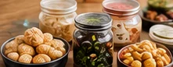
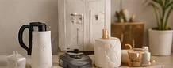

ENTRY
수입 통관Customs entry
해상·항공 화물의 수입 신고를 ACE로 직접 전송하고, 반출될 때까지 진행 상황을 챙깁니다.We file your entry directly in ACE for ocean and air shipments and follow it through to release.
LA·롱비치 항만 기반 미국 관세사LICENSED U.S. CUSTOMS BROKER · LOS ANGELES
K-뷰티, K-푸드를 비롯한 한국 제품의 미국 수입 통관을 전문으로 합니다. 미국 관세사가 직접 상담하고, 신고부터 반출까지 책임지고 처리합니다.We clear K-beauty, K-food and other Korean goods through U.S. Customs. You work directly with a licensed broker, in English or Korean, from the first question to final release.
서비스Services
ENTRY
해상·항공 화물의 수입 신고를 ACE로 직접 전송하고, 반출될 때까지 진행 상황을 챙깁니다.We file your entry directly in ACE for ocean and air shipments and follow it through to release.
ISF 10+2
해상 화물은 선적 24시간 전까지 ISF를 신고해야 합니다. 늦거나 누락되면 건당 최대 $5,000의 벌금이 나올 수 있습니다.Ocean cargo needs an ISF at least 24 hours before loading. Late or missing filings can cost up to $5,000 each.
FDA · USDA
식품 사전신고, 시설 등록, 화장품 MoCRA 등록과 라벨을 선적 전에 미리 점검합니다.We check food Prior Notice, facility registration, and cosmetic MoCRA listing and labels before you ship.
HTS
HTS 코드를 분류하고 관세와 수수료(MPF·HMF)를 미리 계산해, 도착 원가를 정확히 알려드립니다.We classify your goods and estimate duty and fees (MPF, HMF) up front, so you know your landed cost.
BOND
수입 규모에 맞춰 연간 본드와 단건 본드 중 알맞은 쪽을 안내하고 발급을 도와드립니다.We help you pick a continuous or single-entry bond based on your volume, and arrange it for you.
E-COMMERCE
아마존, 틱톡샵, 자사몰 셀러의 소량 화물도 정식 통관으로 처리해 드립니다.Small shipments for Amazon, TikTok Shop and direct-to-consumer sellers, cleared properly.
2025년 8월부터Since Aug 2025
소액 화물에 적용되던 면세(Section 321)가 중단되어, 한국에서 미국 소비자에게 직접 보내는 상품도 관세를 내고 수입 신고를 해야 합니다. 지금 판매 방식에 맞는 통관 방법을 함께 찾아 드립니다.Section 321 de minimis has been suspended, so goods shipped from Korea straight to U.S. customers now owe duty and need an entry. We'll help you find the setup that fits the way you sell.
소개About
JN Customs Brokerage는 미국 관세사 Justin Nam이 직접 운영합니다. 한국 제품을 수입하는 기업, K-뷰티·K-푸드 브랜드, 온라인 셀러가 미국 세관 규정을 정확히 지킬 수 있도록 돕습니다.JN Customs Brokerage is run by licensed U.S. customs broker Justin Nam. We help importers of Korean goods, K-beauty and K-food brands, and online sellers meet U.S. Customs requirements the right way.
10년 넘게 한국–미국 간 포워딩 회사를 운영해 온 현장 경험을 바탕으로, 선적 서류 검토부터 세관 신고, FDA 등 관계 기관 요건까지 빠짐없이 챙겨 드립니다.With more than ten years running a Korea–U.S. freight forwarding company, we look at the whole picture, from shipping documents and customs filing to FDA and other agency requirements.
취급 품목Industries
화장품 · 스킨케어 · 미용 기기Cosmetics, skincare, beauty devices

가공식품 · 음료 · 건강식품Packaged food, drinks, supplements
온라인 셀러 · 소량 화물Online sellers, small shipments

생활용품 · 일반 소비재Household and consumer goods
진행 절차Process
선적 2주 전2 weeks before shipping
제품 정보와 인보이스를 보고 HTS 분류, 예상 관세, FDA 요건을 정리해 드립니다.We review your products and invoice, then lay out classification, estimated duty and FDA needs.
첫 거래 시 1회First shipment only
통관 위임장(POA)에 서명하시면 필요한 세관 본드를 준비합니다. 한국어 안내문도 함께 드립니다.You sign a customs power of attorney and we set up the right bond. A Korean guide comes with the forms.
선적 24시간 전24 hrs before loading
해상 화물은 한국에서 배에 싣기 전에 ISF를 신고합니다.For ocean freight, we file the ISF before the cargo is loaded in Korea.
도착 전Before arrival
화물이 도착하기 전에 신고를 마쳐, 세관·FDA 승인이 트럭 일정에 맞게 나오도록 합니다.We file before arrival so CBP and FDA release lines up with your trucking.
반출 후After release
관세와 수수료를 ACH로 납부하고, 항목별 정산서를 한국어 또는 영어로 보내드립니다.Duty and fees are paid by ACH, and you get an itemized statement in Korean or English.
준비할 서류Documents you'll need
※ 실제 순서와 일정은 운송 방식, 품목, 관계 기관 심사 여부에 따라 달라질 수 있습니다.Actual steps and timing depend on the shipping mode, the product, and any agency review.
문의Contact
제품명, 원산지, 선적 예정일을 알려주시면 필요한 절차와 예상 관세를 안내해 드립니다.Tell us the product, origin and expected ship date. We'll walk you through the steps and estimated duty.
상담 시간: 월–금 오전 9시–오후 6시 (미국 서부 시간)Hours: Mon–Fri, 9 a.m.–6 p.m. Pacific Time